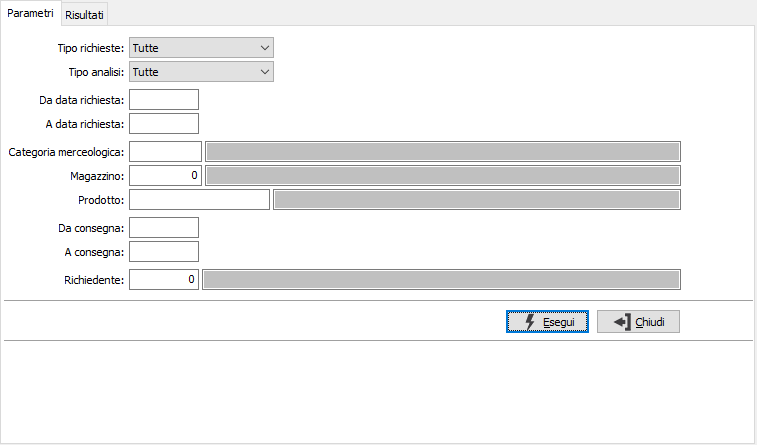
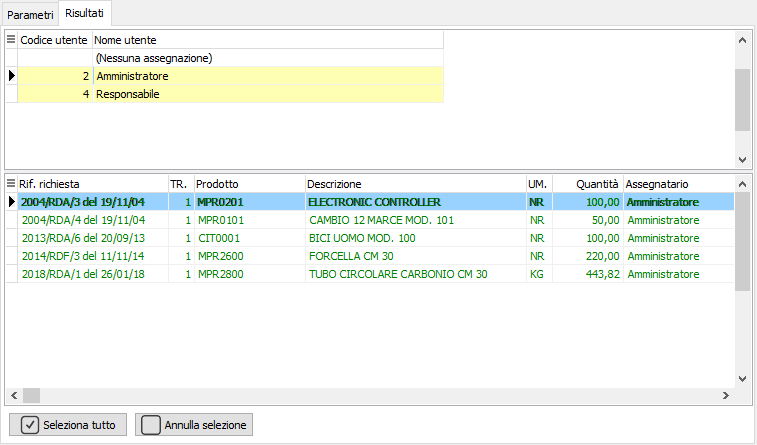
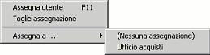

Controllo assegnazione richieste di acquisto
La procedura consente di intervenire, da parte di un responsabile dell'ufficio acquisti, sull'assegnazione delle richieste di acquisto provenienti dal reparto produzione smistandole ai vari utenti dell'ufficio acquisti in relazione anche ai criteri di instradamento degli utenti stessi.
La finestra si compone di due sezioni, una relativa ai parametri di selezione utilizzati per filtrare le righe di richiesta da trattare, un'altra relativa all'assegnazione vera e propria.

TIPO RICHIESTA: definisce il tipo di richieste da analizzare: accettate, da accettare, tutte.
TIPO ANALISI: definisce il tipo di analisi da effettuare sulle richieste: da assegnare, assegnate, tutte.
DA DATA RICHIESTA: indica la data con cui iniziare la selezione delle richieste per effettuare l'operazione selezionata.
A DATA RICHIESTA: indica la data con cui terminare la selezione delle richieste per effettuare l'operazione selezionata.
CATEGORIA MERCEOLOGICA: indica il codice della categoria merceologica da utilizzare per la selezione delle richieste. Sul campo sono disponibili le funzioni di ricerca (F9) sulla tabella stessa.
MAGAZZINO: indica il codice del magazzino da utilizzare per la selezione delle richieste. Sul campo sono disponibili le funzioni di ricerca (F9) sulla tabella stessa.
PRODOTTO: indica il codice del prodotto da utilizzare per la selezione delle richieste. Sul campo sono disponibili le funzioni di ricerca (F9) sulla tabella stessa.
DA CONSEGNA: indica la data di consegna con cui iniziare la selezione delle richieste per effettuare l'operazione selezionata.
A CONSEGNA: indica la data di consegna con cui terminare la selezione delle richieste per effettuare l'operazione selezionata.
RICHIEDENTE: indica il codice dell'utente che ha presentato la richiesta da utilizzare per la selezione dei documenti. Sul campo sono disponibili le funzioni di ricerca (F9) sulla tabella stessa.
La pressione sul pulsante Esegui avvia l'elaborazione e riporta i dati nella sezione successiva.
Questa sezione è divisa in due parti: la parte superiore che riporta gli utenti dei vari uffici acquisti a cui sono state assegnate le richieste e un rigo relativo alle righe richieste da assegnare; nella sezione inferiore, in corrispondenza dell'utente selezionato, sono presenti le righe di richiesta assegnate oppure da assegnare (se l'utente selezionato è "Nessuna assegnazione"). Nella sezione superiore gli utenti responsabili sono evidenziati da uno sfondo giallo chiaro e gli utenti non responsabili sono scritti in grigio chiaro; nella sezione inferiore le righe selezionate sono evidenziate da uno sfondo giallo e le righe già accettate sono scritte in verde.


L'assegnazione è possibile utilizzando il doppio clic del mouse oppure tramite il tasto F11 oppure tramite il menù a lato, richiamabile con il pulsante destro del mouse. E' possibile associare il rigo corrente, oppure più righe selezionandole con clic del mouse tenendo premuto il tasto CTRL, ad uno qualsiasi degli utenti presenti oppure togliere l'assegnazione ad un utente e passarla ad un altro. Sono anche disponibili due pulsanti che consentono la selezione/deselezione di tutte le righe visualizzate.Al termine della selezione tramite la pressione del pulsante Salva sulla toolbar o del tasto F10 viene effettuato il salvataggio dei dati.